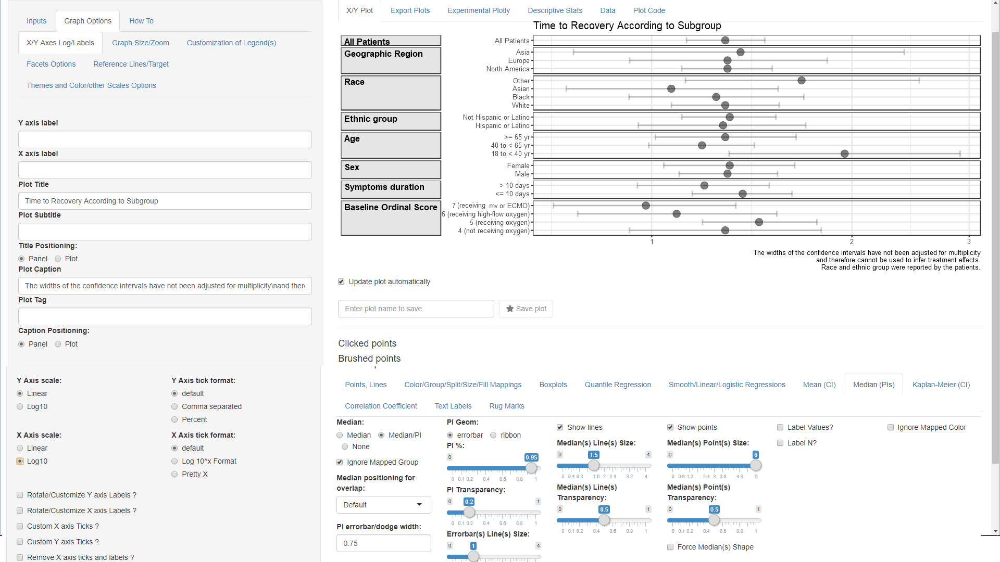

Visualizing Summary Data
Samer Mouksassi
2024-03-28
Source:vignettes/Visualizing_Summary_Data.Rmd
Visualizing_Summary_Data.RmdIn this vignette we will demo how to visualize data which is only available in summary format as it is coming from a published paper table or figure for example Figure 3 from this paper:
“Remdesivir for the Treatment of Covid-19 — Final Report”
Published Data
The data has been made available in a csv data file named
remdesivirfig3.csv
library(ggquickeda) #load ggquickeda
remdesivirdata <- read.csv("./remdesivirfig3.csv") # in vignette folder
knitr::kable(remdesivirdata)| Subgroup | Subgroupvalue | Subgroupvalueorder | N.of.patients | Recovery.Rate.Ratio | RRLCI | RRUCI |
|---|---|---|---|---|---|---|
| All Patients | 1 | 1062 | 1.29 | 1.12 | 1.49 | |
| Geographic Region | North America | 2 | 847 | 1.30 | 1.10 | 1.53 |
| Geographic Region | Europe | 3 | 163 | 1.30 | 0.91 | 1.87 |
| Geographic Region | Asia | 4 | 52 | 1.36 | 0.74 | 2.47 |
| Race | White | 5 | 566 | 1.29 | 1.06 | 1.57 |
| Race | Black | 6 | 226 | 1.25 | 0.91 | 1.72 |
| Race | Asian | 7 | 135 | 1.07 | 0.73 | 1.58 |
| Race | Other | 8 | 135 | 1.68 | 1.10 | 2.58 |
| Ethnic group | Hispanic or Latino | 9 | 250 | 1.28 | 0.94 | 1.73 |
| Ethnic group | Not Hispanic or Latino | 10 | 755 | 1.31 | 1.10 | 1.55 |
| Age | 18 to < 40 yr | 11 | 119 | 1.95 | 1.28 | 2.97 |
| Age | 40 to < 65 yr | 12 | 559 | 1.19 | 0.98 | 1.44 |
| Age | >= 65 yr | 13 | 384 | 1.29 | 1.00 | 1.67 |
| Sex | Male | 14 | 684 | 1.30 | 1.09 | 1.56 |
| Sex | Female | 15 | 278 | 1.31 | 1.03 | 1.66 |
| Symptoms duration | <= 10 days | 16 | 676 | 1.37 | 1.14 | 1.64 |
| Symptoms duration | > 10 days | 17 | 383 | 1.20 | 0.94 | 1.52 |
| Baseline Ordinal Score | 4 (not receiving oxygen) | 18 | 138 | 1.29 | 0.91 | 1.83 |
| Baseline Ordinal Score | 5 (receiving oxygen) | 19 | 435 | 1.45 | 1.18 | 1.79 |
| Baseline Ordinal Score | 6 (receiving high-flow oxygen) | 20 | 193 | 1.09 | 0.76 | 1.57 |
| Baseline Ordinal Score | 7 (receiving mv or ECMO) | 21 | 285 | 0.98 | 0.70 | 1.36 |
Load the Data into the app
# from R launch the app with the data
#run_ggquickeda(remdesivirdata)
# if you have access the the app on a server browse to the file and load itX/Y Mappings and Splitting Options
- After the app finishes loading the data:
- Change the mapped y variable(s) to
‘Subgroupvalue’
- Change the mapped x variable(s) to ‘RRLCI’, ‘Recovery Rate Ratio’ and ‘RRUCI’
- Change the mapped y variable(s) to
‘Subgroupvalue’
- Go to Color/Group/Split/Size/Fill Mappings below
the graph
- cancel the automatic Extra Column Split and set it to ‘None’
- set Select Row Split to ‘Subgroup’.
Facets Options
- Go to Graph Options tab and select the
Facets Options subtab. We will be using advanced
Faceting (graph splitting options):
- Set Facet Scales to ‘free_y’ (this allows only Subgroupvalue specific to the Subgroup to appear on each graph panel)
- Set Facet Spaces to ‘free_y’ (this allows for each panel to occupy space proportional to the number of unique Subgroupvalue)
- Set Facet Switch to Near Axis to ‘y’ (this will move the y strips to the left)
- Set Strip Placement to ‘outside’ (this will put the y strips to the left of the axis)
We still have to set text formatting options using the group of subtabs in the lower part of the page:
- Default subtab: Facet Text Size/Angle/Face
- Set Facet Text Angle Y to 0 (if not automatically set)
- Check the Y strip Text Bold
- Second subtab: Facet Text Justification
- Set Facet Text Vertical Justification Y to 1
- Set Facet Text Horizontal Justification Y to
0
(not shown in the screenshot)
- Fourth subtab: Facet Labels
- Set Facet Label to ‘Value(s)’
(not shown in the screenshot)
- Set Facet Label to ‘Value(s)’
At this point you should have this graph:
Ordering of Variables and Values
- Go to main Inputs tab and select the
Recode/Reorder Categories subtab.
- Set Select a variable(s) to ‘Subgroup’
- Drag and drop the order of levels as in the screenshot
While you can add another variable and manually drag and drop we will demo next another possibility to reorder yvalues using a statistic (e.g. median) of another variable (Subroupvalueorder):
- Select the Reorder Facets or axis Levels subtab
- Set Reorder This Variable to ‘yvalues’
- Keep By the: to ‘Median’
- Set Of this Variable: to ‘Subroupvalueorder’
Remove Default Points and add a Point Interval
- Select the Points, Lines subtab
- Set Points to ‘None’
- Select the Median (PIs) subtab
- Set Median to ‘Median/PI’
- Set PI Geom: to ‘errorbar’
- Set PI %: to 1 (this ensures that the errorbar goes from the min to max of values)
- Uncheck Show lines and check Show points
- Set Median(s) Point(s) Size: to 6
Setting Titles, Captions and Logging the X axis
- Select the Graph Options subtab next to the
Inputs and in the first default subtab X/Y Axes
Log/Labels:
- Type in one space in the Y axis label (this removes the default label)
- Type in one space in the X axis label (this removes the default label)
- Type in “Time to Recovery According to Subgroup” in the Plot Title field
- Type in “The widths of the confidence intervals have not been adjusted for multiplicity\nand therefore cannot be used to infer treatment effects.\nRace and ethnic group were reported by the patients.” in the Plot Caption field (notice how the\n produce a line break)
- Set X Axis scale to ‘log10’
And now you should get the below plot !: 
Example of what is Possible with ggquickeda
As an example of even more advanced features consider the screenshot below where the Intervals Values are shown while the point Size is proportional to the N of patients. Some theme adjustments to customize the plot and legend were also done.